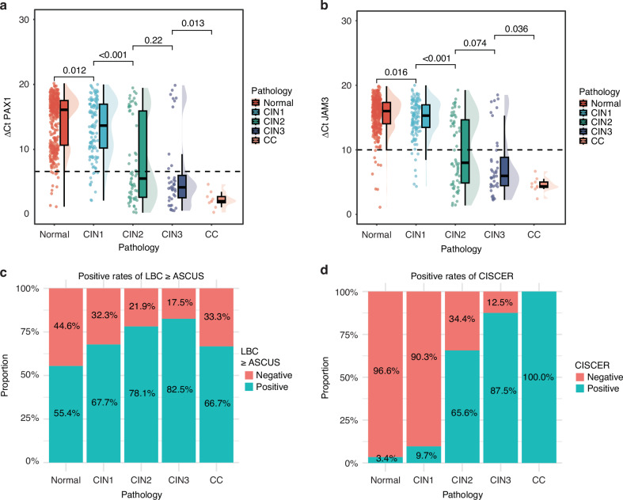
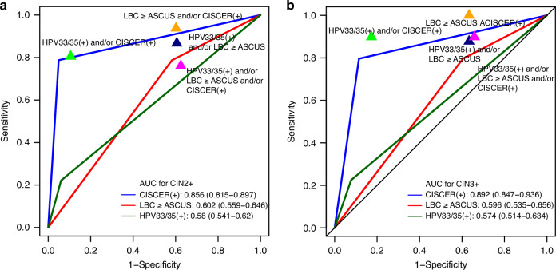
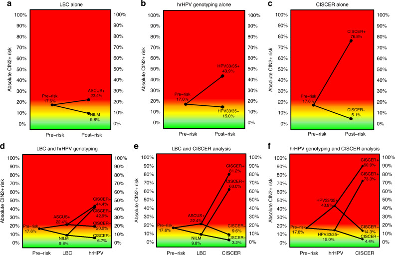

1Background & Objective
- Context: non-16/18 hrHPV+ is the largest hrHPV group in China — risk stratification is a key need.
- Compare: LBC vs hrHPV genotyping vs CISCER (PAX1/JAM3) for absolute-risk triage.
2Study Design & Cohort
1,307
non-16/18 hrHPV+
643
with histology
40y
median age
- Histology: normal/inflamm. 406 · CIN1 124 · CIN2 64 · CIN3 40 · cancer 9.
- Assays: LBC + hrHPV genotyping + CISCER (qPCR).
- Endpoint: absolute CIN2+/CIN3+ risk & referral rate.
3Methylation & Positivity by Grade

Fig. 2 ΔCt differs across grades; CISCER+ 3.4% → 100% (normal → cancer).
3.4%
CISCER+ · normal
65.6%
CIN2
87.5%
CIN3
100%
cancer
Methylation positivity mirrors severity — a continuous risk signal.
4ROC & Risk Stratification

Fig. 3 ROC — CISCER vs LBC vs HPV33/35 for CIN2+/CIN3+.

Fig. 4 Pre/post-test CIN2+ risk — CISCER(+) highest, CISCER(−) lowest.
- Risk spread: CISCER+ vs − difference 38.4%; LBC 5.7%; HPV33/35 12.8%.
- Combined: CISCER+ & LBC≥ASCUS → 40.0%; CISCER+ & HPV33/35+ → 50.0%.
5Referral & Efficiency
| Strategy | Referral % | CIN3+ risk |
|---|---|---|
| CISCER(+) | 17.4 | 39.1% |
| LBC ≥ASCUS | 61.9 | 9.8% |
| HPV33/35(+) | 8.9 | 19.3% |
17.4%
CISCER(+)
61.9%
LBC ≥ASCUS
8.9%
HPV33/35(+)
- 1 / 2.5 referred diagnosed CIN3+ with CISCER(+) — most efficient.
- Negative safety: CISCER(−) → CIN3+ risk 0.9% — safe follow-up.
- Combined rule-out: CISCER(−) & NILM → 0.0% CIN3+ risk.
- Objective: qPCR methylation — reproducible, operator-independent.
CISCER triage avoids ~72% of LBC-based referrals while keeping low risk of missing CIN3+.